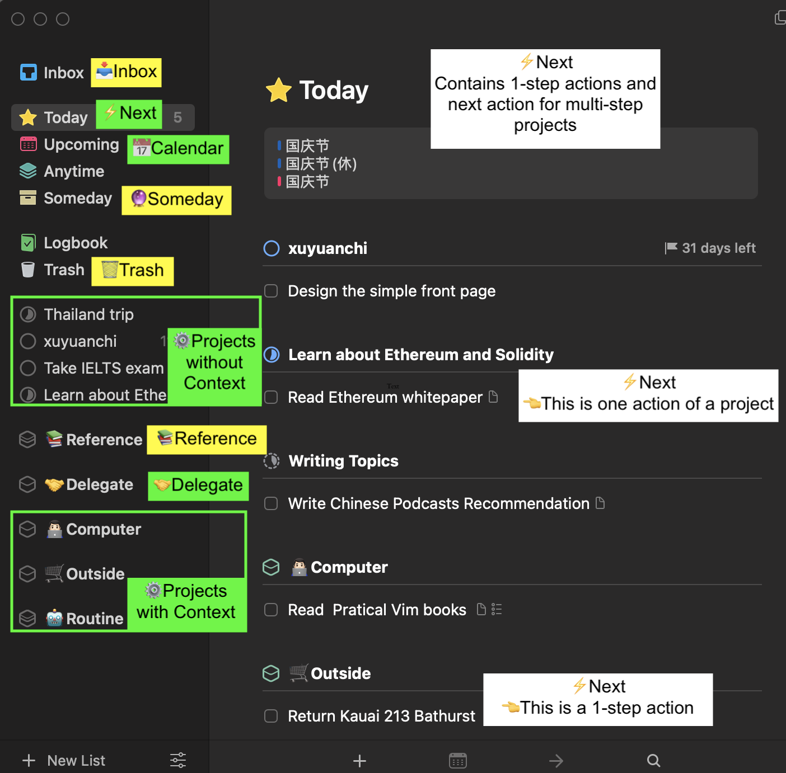

Get Things Done: My Take Away
Get Things Done is a self-help book written by David Allen, which introduces some basic methods to arrange your daily tasks so that you can live a productive and stressless life. Here are my takeaways.
The workflow of GTD consists of 5 steps (but remember, no need to finished all the steps at the same time):
- Capture. Get all things out of your mind and write down them to your 📥Inbox at any time.
- Clarify. Find a time to check items in your inbox. Is it actionable? If the stuff is just an idea that you might want to do but not now, you can leave it to a 🔮someday list. If it is a reference to materials helpful to your other goals, collect it to your 📚Reference system.
- Organize. Does your actionable item need more than one step? If so convert it to a ⚙️Project and find the fist step to do it. If a action can be done within 2 minutes, just do it (without considering its priority). Does the step can be got about right now? If so put it into your ⚡️Next to-do list. Or else, arrange a future time to do it in your 📅Calendar or 🤝Delegate it to others.
- Reflect. Review your Inbox, Delegate list, Next actions weekly and reorganize them if needed.
- Engage. Pick one to-do from your Next to-do list and do it right now.

After your organization, the stuff can be divided into these places:
- Project list: Desired results which require more than one action step. And you can organize your project support material by theme or topic inside the project.
- Next Actions list: Actions needs to be done today or anytime.
- Delegate list: Projects waiting for other people’s responses.
- Calendar: 1. time-specific actions such as an appointment that are going to happen on a specific time; 2. day-specific actions such as to call someone on his/her birthday; 3. day-specific information, such as directions for appointments.
- Someday list: Projects your don’t want to do recently, but you’d like to be reminded of them regularly on your weekly reviews.
- Reference System: Reference to materials you may need.
To combine this method with Things 3 app:

And when you get up every morning, what you should do is to check your Today list and choose things needs to be done today.
Author Harold Gao
LastMod Oct 1, 2023